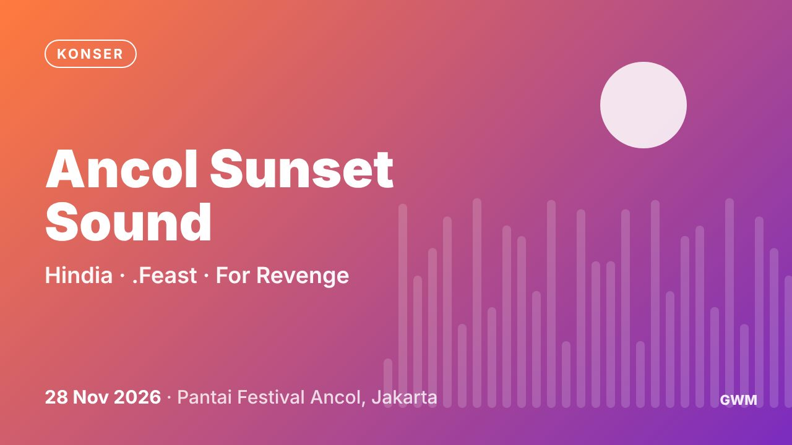

Konser · Festival campuran
Ancol Sunset Sound: Hindia, .Feast & For Revenge
- Tanggal
- 28 Nov 2026
- Lokasi
- Pantai Festival Ancol, Jakarta, Jakarta
- Harga
- Mulai Rp75.000
- Pengisi acara
- Hindia, .Feast, For Revenge
Konser tepi pantai Ancol Sunset Sound yang menampilkan Hindia, .Feast, dan For Revenge.
Buka di GWM Beli tiket / info resmi
Cek ulang jadwal dan harga di kanal resmi penyelenggara sebelum membeli tiket.